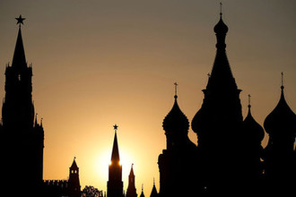
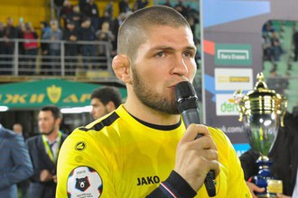
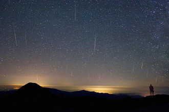
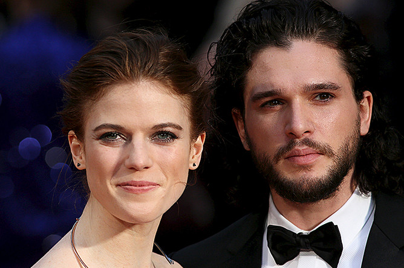

-
Политика 23:08
Казни и суды: что будет с Россией без Совета Европы
Отношения России и Совета Европы находятся в стадии глубокого кризиса. Москва может сама покинуть Совет Европы, членство в котором гарантирует ряд привилегий для...
-
Спорт 22:33
«Покажем зал, он бороться не умеет»: Конора зовут в Дагестан
Хабиб Нурмагомедов пригласил Конора Макгрегора в Дагестан. Россиянин пообещал накормить ирландца, а также показать ему борцовский зал. Отец и тренер Нурмагомедова...
-
Армия 20:15
«Катастрофическое решение»: Европа занервничала из-за Трампа
Германия постарается убедить Вашингтон отказаться от выхода из ДРСМД, заявил министр иностранных дел ФРГ Хайко Маас. По его словам, намерение США выйти из Договора о...
-
Наука 20:10
Небо засияет: россиян ожидают Ориониды
В ночь с 21 на 22 октября можно будет наблюдать пик осеннего звездопада Ориониды. О метеорном потоке и где его лучше наблюдать рассказывает «Газета.Ru».
-
Культура 19:36
Джон Сноу что-то знает: чем кончится «Игра престолов»
Актер Кит Харингтон не раскрыл концовку «Игры престолов» даже собственной жене Роуз Лесли. Также он подтвердил, что не планирует появляться в какой-либо серии...
-
Бэнкси отреагировал на уничтожение своей картины на аукционе
-
Власти Китая подозревают главу Интерпола в коррупции
-
СК опроверг версию о застреленном пилоте вертолета с замом Чайки
-
Google Chrome перестанет работать на 32 млн устройств
-
Первая леди США рассказала, как относится к твитам Трампа
-
Аллегри прокомментировал выдающийся старт «Ювентуса» в Серии А
-
Кавано утвержден в должности верховного судьи США
-
Власти Китая подозревают главу Интерпола в коррупции
-
В Саратове скончался второй за месяц полицейский конь
-
МИД: Нидерланды не предъявляли задержанным россиянам претензий